Установка MS SQL Server 2019
MS SQL Server доступен в различных вариациях. Прежде всего, это MS SQL Server Enterprise - полный выпуск, нацеленный на использование в реальных проектах. Именно он используется на различных хостингах и серверах баз данных. Однако он доступен только в платной версии (не считая триального периода) и стоит довольно приличных денег.
Для простых приложений также может хватить и выпуска Express: он бесплатный. К тому же у него есть преимущество - его можно ставить в качестве реального сервера и использовать в реальных задачах, однако он имеет урезанный функционал по сравнению с полной версией.
И также есть MS SQL Server Developer Edition. Это полнофункциональный выпуск, который содержит весь функционал, что и полная версия MS SQL Server Enterprise, только нацелена только для нужд разработки. В то же время эта версия не может быть использована для развертывания в качестве реального сервера на реальных проектах. Однако для изучения всей механики MS SQL Server эта версия представляет оптимальный вариант, поэтому именно эту версию мы и будем использовать.
Но в данном случае для данного руководства по большому счету можно использовать как Developer, так и Express выпуск.
Итак, установим MS SQL Server 2019 Developer Edition. Для этого перейдем по адресу https://www.microsoft.com/en-us/sql-server/sql-server-downloads. Найдем на странице пункт "Developer" и нажем на кнопку загрузки.
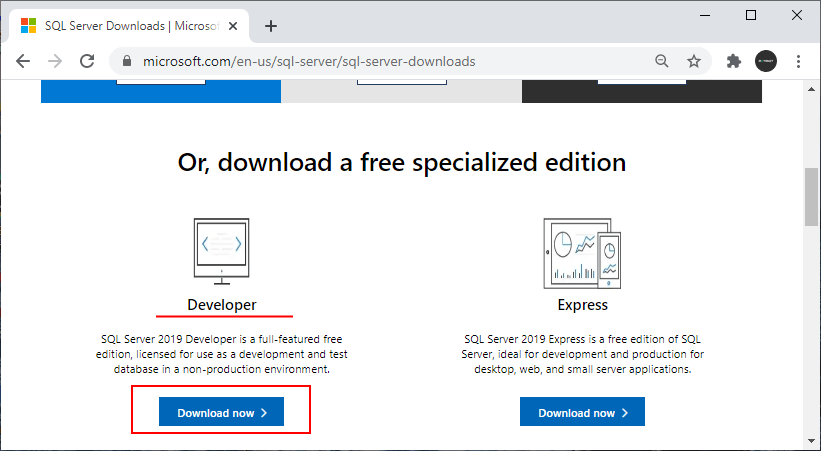
После загрузки программы установки запустим ее. И вначале нам будет предложено два варианта установки: базовая и настраиваемая. Для потребностей данного руковдства вполне хватит и базовой установки. Тем не менее рассмотрим оба варианта установки.
Базовая установка MS SQL Server Developer Edition
В начале рассмотрим базовую установку. На начальном шаге укажем в качестве типа установки тип "Базовая":
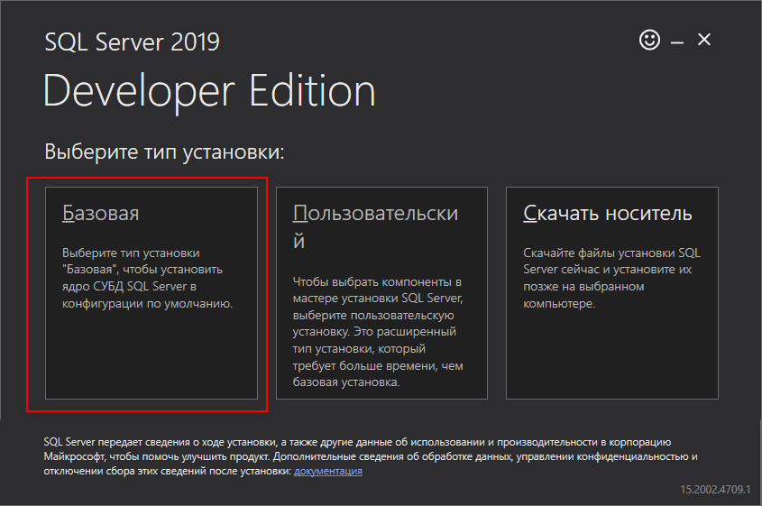
После принятия лицензионного соглашения нам будет предложено установить путь для установки:
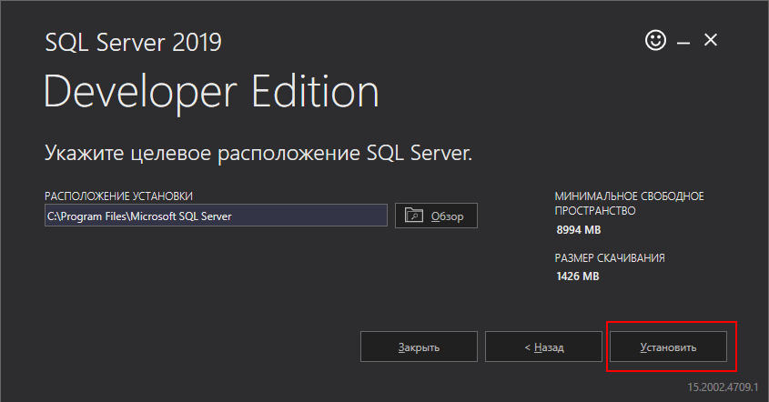
Оставим все настройки по умолчанию и нажмем на кнопку "Установить".
После завершения установки на финальном экране мы увидим ряд данных, которые нам могут понадобится в дальнейшем при работе с MS SQL Serverом.
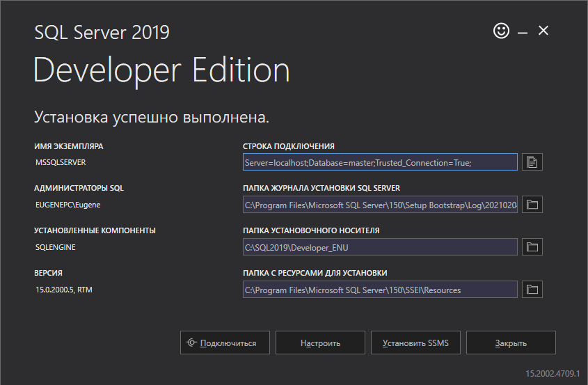
Прежде всего это имя экземпляра - по умолчанию MSSQLSERVER. По этому имени мы сможем найти запущенный сервер в панели служб или можно это имя использовать при обращении к серверу из других программ.
Также стоит отметить строку подключения, которая по умолчанию представляет "Server=localhost;Database=master;Trusted_Connection=True;".
Через эту строку подключения мы сможем подключаться к серверу из других программ, запущенных на этом же компьютере.
Итак, мы установили SQL Server 2019, у которого имя экземпляра - "MSSQLSERVER". Следует отметить, что перед подключением к нему, надо убедиться, что он запущен. Для этого можно открыть окно служб:
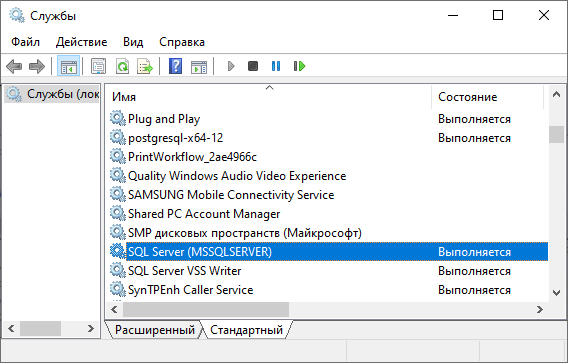
Если он не запущен, там же в панели служб мы его может запустить, и после этого мы сможем с ним работать.
Подобным образом устанавливается и MS SQL Server 2019 Express
.Настраиваемая установка
Теперь рассмотрим настраиваемую установку. Для этого при установке выберем тип установки "Пользовательский":
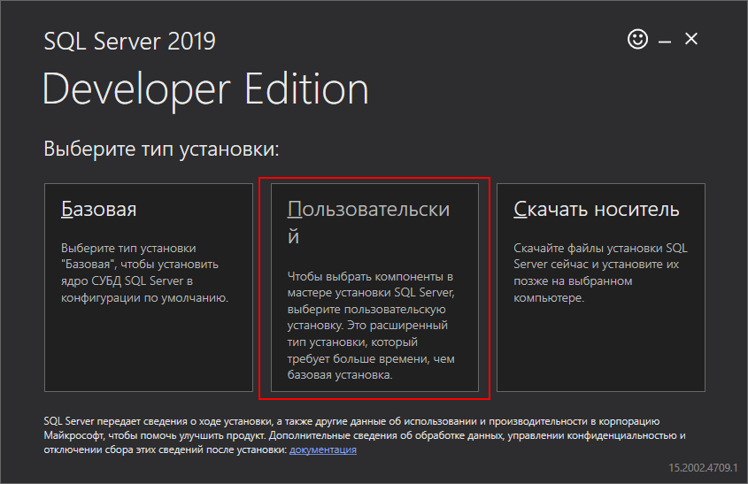
Далее нам надо будет указать язык установки и расположение для скачивания носителя.
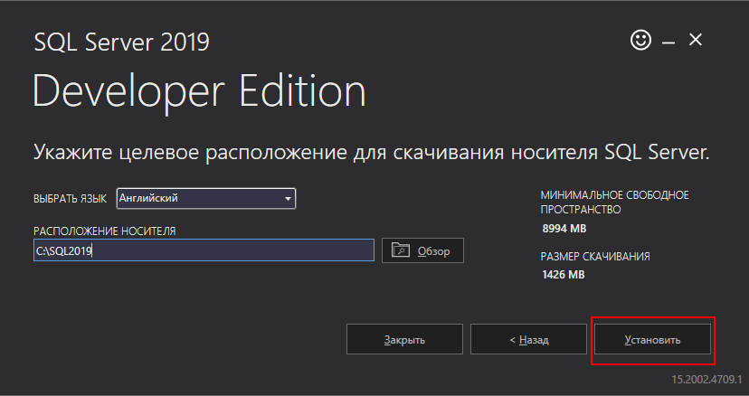
По умолчанию расположение на Windows - папка C:\SQL2019. В дальнейшем, если возникнет необходимость добавить какие-то компоненты или изменить параметры установки, то при изменении программа установки потребует расположение загруженных файлов. И именно этот путь необходимо будет указать.
Оставим все настройки по умолчанию и нажмем на кнопку "Установить". И далее нам откроется мастер установки.
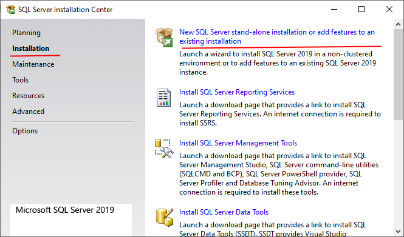
В левой части выберем пункт Installation, а в правой выберем первый пункт - New SQL Server stand-alone installation or add features to an existing installation. Далее с помощью последовательности шагов нам надо будет установить опции установки.
На первом этапе надо ввести ключ, либо указать один из бесплатных выпусков. Здесь мы указываем выпуск "Developer" и переходим к новому шагу по кнопке Next.
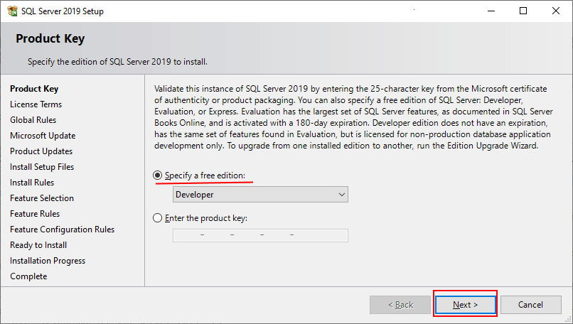
Далее надо будет принять лицензионное соглашение. И затем прощелкаем на кнопку Next до шага Feature Selection. На этом этапе предлагается выбрать компоненты для установки. Здесь отметим все компоненты, учитывая при этом объем свободной памяти:
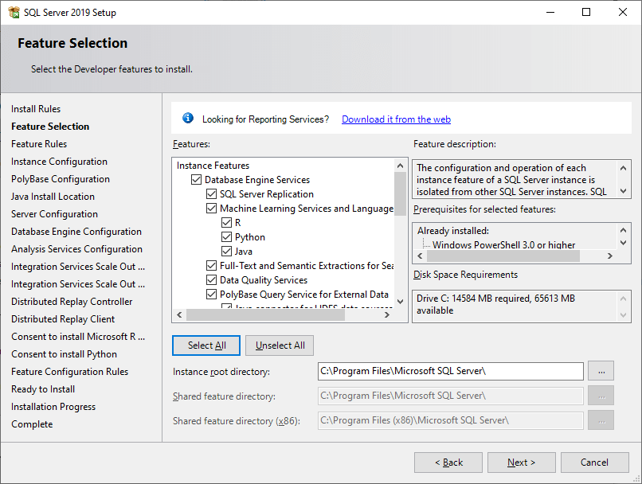
В зависимости от выбранных компонентов увеличивается количество этапов установки, где надо выполнить какие-либо настройки. В моем случае выбраны все компоненты. Поэтому в дальнейшем рассмотрим тот случай, если выбраны все компоненты.
Далее на шаге Instance Configuration нам надо будет указать название и ID запускаемой сущности SQL Server.
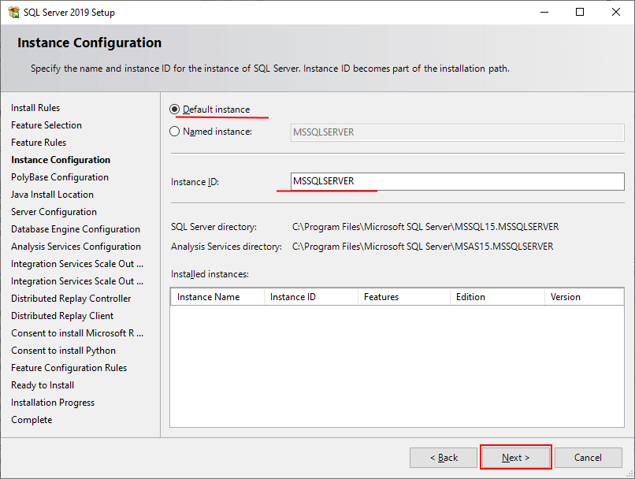
Для имени указываем опцию Default instance, а для ID оставляем значение по умолчанию - MSSQLSERVER. Это будет то имя экземпляра, по которому мы сможем обращаться к серверу из внешних приложений.
Затем прощелкаем последующие шаги с опциями по умолчанию до Database Engine Configuration. С помощью кнопки Add Current User здесь добавим текущего пользователя в качестве администратора для сервера.
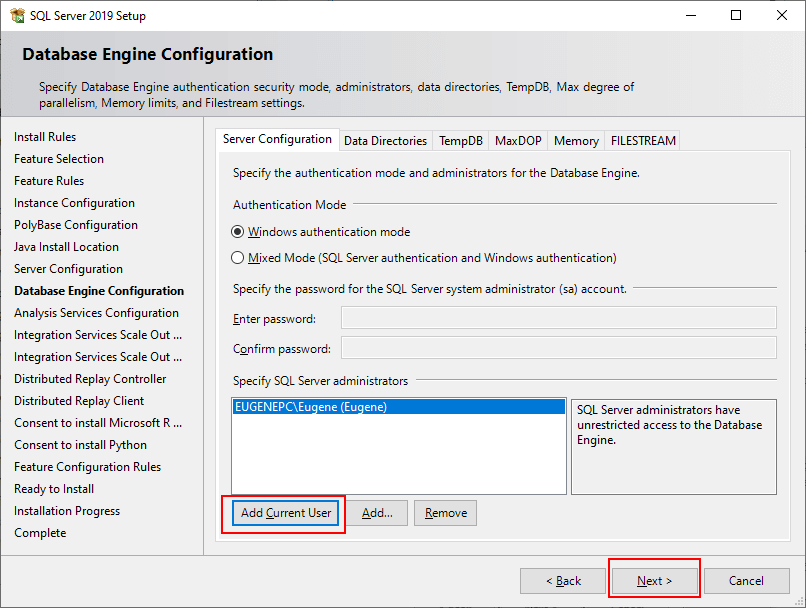
На следующем шаге Analysis Services Configuration также добавим текущего пользователя в качестве администратора для функции Analysis Services:
На следующих двух шагах оставим настройки по умолчанию. И далее на шаге "Distributed Replay Controller" аналогично добавим текущего пользователя
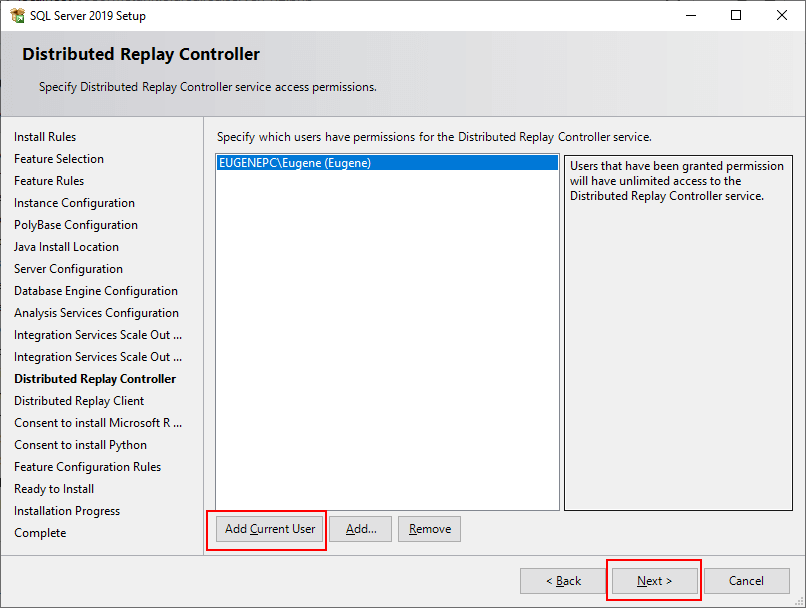
На всех последующих шагах оставим настройки по умолчанию и на самом последнем экране для установки нажмем на кнопку Install:
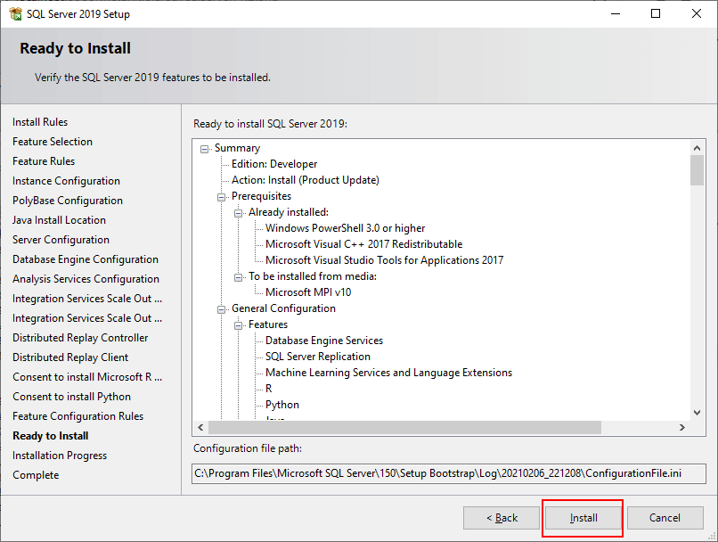
Спустя некоторое время MS SQL Server будет установлен.